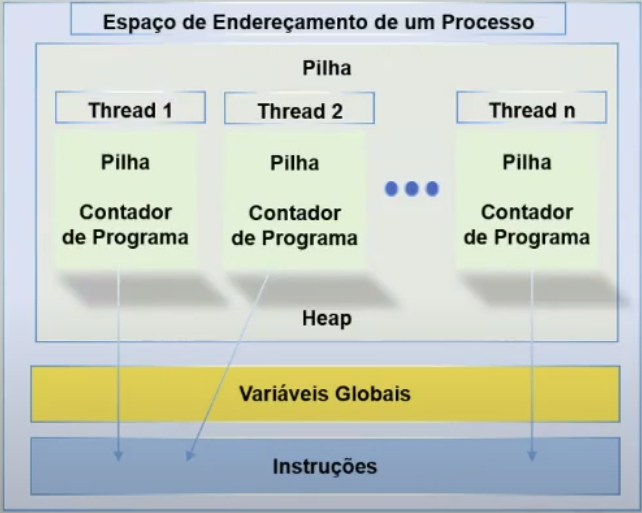
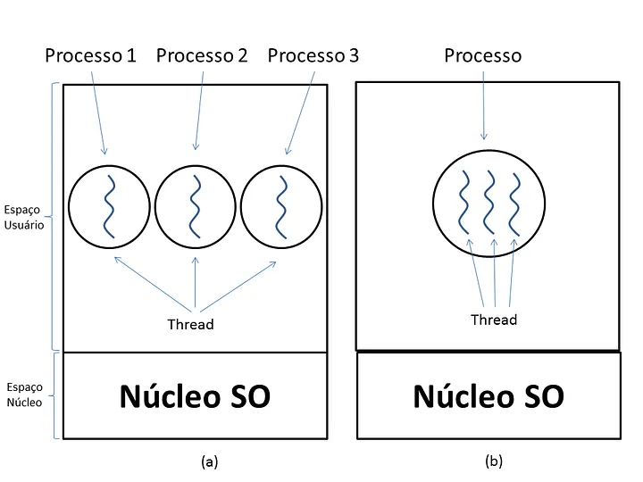

Disciplinas
-
SISTEMAS COMPUTACIONAIS. Concluído
Materiais
Vídeo 2 - Sistemas Computacionais - Sistema operacional e arquitetura e organização de computadores. sendProf° ministrante: Alessandra Alaniz Macedo (UNIVESP).
Conteúdo
Sistema Operacional.
Arquitetura e organização de computadores.
Papel do Sistema Operacional.
- Fornecer aos programas dos usuários uma interface com o hardware mais simples
- Gerenciar os recursos do computador
- Pela perspectiva de usuário, o SO atua como uma interface entre o hardware e o usuário do sistema
- É o software que gerencia os recursos do computador e controla a execução de processos na CPU com auxílio de hardware como:
- Registradores
- Circuitos
GERENCIAMENTO DE RECURSO.
- O SO direciona o processador e a memória no uso dos recursos do sistema.
- Escalonamento de processos
- Gerenciamento de memória
ESCALONAMENTO DE PROCESSOS.
- É um processo que ocorre quando o scheduler da CPU seleciona, via algoritmo e com auxílio de hardware, os processos mais viáveis para execução e seu tempo, quando necessária a troca
- O SO determina quais processos devem ser executados a cada instante para compartilhar o tempo do processador
TÉCNICAS DE ESCALONAMENTO.
- Buscam justiça, policy enforcement e equilíbrio
- First In, First Out (FIFO)
- Shortest Job First (SJF)
- Round Robin (RR)
- Múltiplas filas
- Loteria
- Fair-Share, etc
PROCESSOS E THREADS.
 PROCESSOS E THREADS. BIBLIOGRAFIA
- Delgado, J & Ribeiro, C. Arquitetura de Computadores, 5ª edição. [Digite o Local da Editora]: Grupo GEN, 2017. 9788521633921. Disponível em: https://integrada.minhabiblioteca.com.br/#/books/9788521633921/. Acesso em: 13 Jan 2021
- Stallings, W. Arquitetura e organização de computadores. Parte II. Cap 8 Páginas 233 e 270 (de 731 páginas). Editora: Editora Pearson. Edição: 10° (2017). Idioma: Português. ISBN: 9788543020532
- Tanenbaum, A & Austin, T. Organização estruturada de computadores. Cap. 6 (O Sistema Operacional). Páginas: 363 a 425 (de 628 páginas). Editora: Editora Pearson. Edição: 6° (2013). Idioma: Português. ISBN: 9788581435398